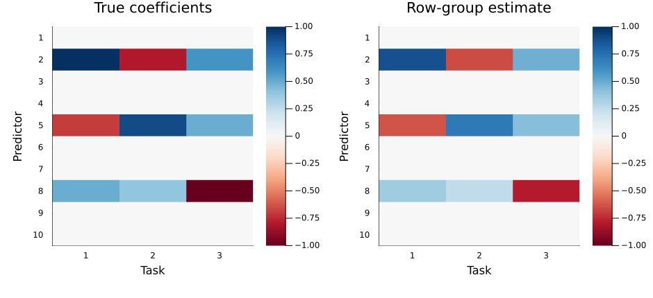

Multi-task group lasso
Several responses may depend on the same predictors with different effect sizes. Fitting every response separately can discard this shared structure. A row-group penalty pools evidence across tasks, selecting predictors jointly while retaining a coefficient for each response.

Multi-task regression with shared row sparsity, fitted as a group lasso on the rows of the coefficient matrix. There are K regression tasks on the same n × p design X, with responses Y ∈ ℝⁿˣᴷ (one column per task) and coefficients B ∈ ℝᵖˣᴷ (one column per task, one row per predictor). The fit minimizes
\[\min_{B\in\mathbb R^{p\times K}}\;\frac{1}{2n}\|Y-XB\|_F^2 +\lambda\sqrt K\sum_{j=1}^p\|B_{j,:}\|_2.\]
The penalty acts on the rows of B: a zero row removes predictor j from all K tasks at once, while a selected row has separate coefficients in each task. This is the penalty studied by Obozinski, Wainwright and Jordan (2011), Support union recovery in high-dimensional multivariate regression, Annals of Statistics 39(1). It is not a low-rank (nuclear-norm) estimator: nothing ties the coefficient values across tasks, only the set of predictors.
The problem is solved by CDSolver on a Matrix coefficient, with ProximalBase's LeastSquaresLoss(Y, X) for the matrix response and GroupNormL2 on the rows of B; this is the multi-response group lasso row of Supported problems, whose rules are stated in Multi-response group lasso with coordinate descent. The solver works from X and Y directly, without a Kronecker design or a vectorized response.
using LinearAlgebra, Random
using ProximalBase, ProximalSolversStatistics is not a dependency of this project, so the column means are computed directly.
colmeans(A) = vec(sum(A, dims = 1)) / size(A, 1)colmeans (generic function with 1 method)Data
There are n = 100 observations of p = 10 correlated predictors and K = 3 tasks. Three rows of the true coefficient matrix are nonzero, with different values (and signs) in the three tasks; the other seven rows are zero. Each task has its own intercept, and the noise has standard deviation 0.5.
rng = Xoshiro(393)
n, p, K = 100, 10, 3
sigma = 0.5
true_rows = [2, 5, 8]
B_true = zeros(p, K)
B_true[2, :] = [1.0, -0.8, 0.6]
B_true[5, :] = [-0.7, 0.9, 0.5]
B_true[8, :] = [0.5, 0.4, -1.0]
a_true = [1.0, -2.0, 0.5]
L = cholesky(SymTridiagonal(fill(1.0, p), fill(0.3, p - 1))).L # neighbor correlation 0.3
draw(rng, m) = 2.0 .+ randn(rng, m, p) * L'
X_raw = draw(rng, n)
Y_raw = a_true' .+ X_raw * B_true + sigma * randn(rng, n, K)100×3 Matrix{Float64}:
2.13095 -1.76947 1.19199
0.771609 -0.359671 1.14527
3.70507 -1.21542 0.0119104
3.90421 -2.76416 1.13071
1.9558 -0.402957 0.27919
3.24444 0.795429 -0.790679
2.65284 0.68808 -0.0118601
2.19451 -0.581088 0.159686
0.143424 -0.123447 2.12941
3.99431 -0.740008 0.630412
⋮
1.90916 -0.97199 1.82113
2.55255 -0.102207 1.07804
2.24078 -0.36449 0.0864046
2.64449 -0.299972 -0.357336
-0.244925 0.415474 2.17342
3.49533 -0.762415 -0.412267
2.71625 -0.317611 -0.276403
3.75179 -0.915848 -0.211943
3.93443 -2.63961 1.29546The model has no unpenalized intercept inside the penalty. Instead the columns of X and of Y are centered. For a fixed B, the intercepts that minimize ‖Y_raw − 1 aᵀ − X_raw B‖²_F / (2n) are a = ȳ − Bᵀ x̄ (the column means of Y_raw and X_raw), and the minimum is ‖Y − X B‖²_F / (2n) in the centered data. So the fit below is the fit with free intercepts, which are recovered afterwards from B̂.
xbar, ybar = colmeans(X_raw), colmeans(Y_raw)
X = X_raw .- xbar'
Y = Y_raw .- ybar'
@assert norm(colmeans(X)) <= 1e-12 && norm(colmeans(Y)) <= 1e-12The problem
ProximalBase's LeastSquaresLoss(Y, X) with a matrix response is ‖Y − X B‖²_F / 2, so the loss of the objective above is (1/n) * LeastSquaresLoss(Y, X). The scale is 1/n and not 1/(nK): the squared Frobenius norm is summed over the tasks, not averaged.
The groups of GroupNormL2 index the entries of vec(B), not the columns of X. Julia stores a matrix by columns, so entry B[j, k] is entry (k − 1) p + j of vec(B), and row j of B is the group j:p:p*K = {j, p + j, …, (K − 1) p + j}: one entry from each task, for the same predictor, and not contiguous. The solver requires exactly these groups, in this order. GroupNormL2(λ, groups) has the default weights wⱼ = √|Gⱼ| = √K, so its value at B is λ √K Σⱼ ‖B[j, :]‖₂, the penalty above. The assertions check, for the sizes of this page, that the groups partition the entries of B and that group j is row j, and that the penalty evaluated by ProximalBase at B_true is λ √K Σⱼ ‖B_true[j, :]‖₂.
rowgroups(p, K) = [collect(j:p:p*K) for j in 1:p]
groups = rowgroups(p, K)
@assert sort(reduce(vcat, groups)) == collect(1:(p * K)) # a partition
@assert all(LinearIndices((p, K))[j, :] == groups[j] for j in 1:p) # group j = row j
let g1 = GroupNormL2(1.0, groups)
@assert g1.w == fill(sqrt(K), p)
@assert abs(g1(B_true) - sqrt(K) * sum(norm(r) for r in eachrow(B_true))) <= 1e-12
endThe objective and the optimality conditions are computed from X and Y, independently of the solver. With G = Xᵀ(X B − Y)/n, a nonzero row satisfies G[j, :] + λ √K B[j, :]/‖B[j, :]‖ = 0 and a zero row satisfies ‖G[j, :]‖ ≤ λ √K. The function returns the largest violation over the nonzero rows and over the zero rows, max(‖G[j, :]‖ − λ √K, 0).
objective(X, Y, B, lambda) =
norm(Y - X * B)^2 / (2 * size(X, 1)) + lambda * sqrt(size(Y, 2)) * sum(norm(r) for r in eachrow(B))
function violations(X, Y, B, lambda)
G = X' * (X * B - Y) / size(X, 1)
t = lambda * sqrt(size(Y, 2))
nz, zr = 0.0, 0.0
for j in axes(B, 1)
bj, gj = B[j, :], G[j, :]
if iszero(norm(bj))
zr = max(zr, norm(gj) - t)
else
nz = max(nz, norm(gj + t * bj / norm(bj)))
end
end
nz, zr
endviolations (generic function with 1 method)The fit writes B̂ into a p × K matrix of zeros and returns it as the minimizer. The tolerance 1e-12 is a threshold on the change of the coefficients over a pass, and converged reports only that this change test passed; the optimality statements below rest on violations. The selected rows are the nonzero rows of B̂.
function fit(X, Y, lambda)
n, p = size(X)
K = size(Y, 2)
g = GroupNormL2(lambda, rowgroups(p, K))
B = zeros(Float64, p, K)
res = solve!(B, (1 / n) * LeastSquaresLoss(Y, X), g,
CDSolver(order = :cyclic, momentum = false, tol = 1e-12))
@assert res.minimizer === B
@assert size(B) == (p, K) && all(isfinite, B)
rows = [j for j in 1:p if any(!iszero, B[j, :])]
(; Bhat = B, rows, res)
endfit (generic function with 1 method)The penalty level where all rows are zero
At B = 0 the gradient of the loss is −XᵀY/n, so B = 0 is optimal exactly when λ ≥ λmax = maxⱼ ‖(XᵀY)[j, :]‖₂ / (n √K). The first assertion checks that B = 0 meets the zero-row condition at λmax.
lambda_max(X, Y) = maximum(norm(r) for r in eachrow(X' * Y)) / (size(X, 1) * sqrt(size(Y, 2)))
lambdamax = lambda_max(X, Y)
@assert violations(X, Y, zeros(p, K), lambdamax)[2] <= 1e-12 * lambdamax
println("λmax = ", round(lambdamax, digits = 4))λmax = 0.8448The threshold is checked on a tiny seeded control (n = 8, p = 4, K = 2): at (1 + 10⁻⁶) λmax and at 2 λmax the solver returns exact zeros, and at 0.9 λmax it returns a nonzero row, so the formula is not merely an upper bound.
let rng = Xoshiro(1)
Xs = randn(rng, 8, 4); Xs .-= colmeans(Xs)'
Ys = randn(rng, 8, 2); Ys .-= colmeans(Ys)'
lm = lambda_max(Xs, Ys)
for lambda in ((1 + 1e-6) * lm, 2 * lm)
r = fit(Xs, Ys, lambda)
@assert all(iszero, r.Bhat) && isempty(r.rows)
end
@assert !isempty(fit(Xs, Ys, 0.9 * lm).rows)
println("tiny control: all coefficients zero at (1 + 1e-6) λmax and 2 λmax, ",
"a nonzero row at 0.9 λmax")
endtiny control: all coefficients zero at (1 + 1e-6) λmax and 2 λmax, a nonzero row at 0.9 λmaxA fit
The penalty level is a fixed fraction of λmax, chosen so that the fit has both selected and unselected rows on this data set. It is not tuned (for example by cross-validation).
lambda = 0.15 * lambdamax
r = fit(X, Y, lambda)
Bhat = r.Bhat10×3 Matrix{Float64}:
0.0 0.0 0.0
0.881327 -0.657366 0.486471
0.0 0.0 0.0
0.0 0.0 0.0
-0.634224 0.716292 0.428318
0.0 0.0 0.0
0.0 0.0 0.0
0.354489 0.253937 -0.795214
0.0 0.0 0.0
0.0 0.0 0.0The objective reported by the solver must equal the matrix objective computed from X, Y and B̂, and the row conditions must hold. A selected row is nonzero in every task, as the row penalty makes generic.
obj = objective(X, Y, Bhat, lambda)
@assert abs(r.res.minimum - obj) <= 1e-10 * (1 + obj)
nz, zr = violations(X, Y, Bhat, lambda)
@assert nz <= 1e-6 * lambda && zr <= 1e-6 * lambda
@assert 0 < length(r.rows) < p
@assert all(all(!iszero, Bhat[j, :]) for j in r.rows)
println("λ = 0.15 λmax = ", round(lambda, digits = 4), ": passes = ", r.res.passes,
"; objective ", round(obj, digits = 6), "; row violations ", nz, " (nonzero), ",
zr, " (zero)")
println("true rows ", true_rows, "; selected rows ", r.rows)λ = 0.15 λmax = 0.1267: passes = 12; objective 1.134034; row violations 8.756213284637136e-16 (nonzero), 0.0 (zero)
true rows [2, 5, 8]; selected rows [2, 5, 8]The estimated coefficients, one row per predictor and one column per task. A row is either zero in all tasks or (generically) nonzero in all tasks.
println("row true coefficients estimated coefficients")
for j in 1:p
println(lpad(j, 3), " ", rpad(string(round.(B_true[j, :], digits = 2)), 24),
round.(Bhat[j, :], digits = 2), j in r.rows ? "" : " (zero row)")
endrow true coefficients estimated coefficients
1 [0.0, 0.0, 0.0] [0.0, 0.0, 0.0] (zero row)
2 [1.0, -0.8, 0.6] [0.88, -0.66, 0.49]
3 [0.0, 0.0, 0.0] [0.0, 0.0, 0.0] (zero row)
4 [0.0, 0.0, 0.0] [0.0, 0.0, 0.0] (zero row)
5 [-0.7, 0.9, 0.5] [-0.63, 0.72, 0.43]
6 [0.0, 0.0, 0.0] [0.0, 0.0, 0.0] (zero row)
7 [0.0, 0.0, 0.0] [0.0, 0.0, 0.0] (zero row)
8 [0.5, 0.4, -1.0] [0.35, 0.25, -0.8]
9 [0.0, 0.0, 0.0] [0.0, 0.0, 0.0] (zero row)
10 [0.0, 0.0, 0.0] [0.0, 0.0, 0.0] (zero row)The intercepts on the original scale are â = ȳ − B̂ᵀ x̄. The prediction error is measured on 2000 fresh rows against the true regression function a + Bᵀx, not against noisy responses, separately for each task. The lasso shrinks the selected coefficients toward zero, so the error is not zero even when the selected rows are the true ones.
ahat = ybar - Bhat' * xbar
X_new = draw(Xoshiro(394), 2000)
mu_new = a_true' .+ X_new * B_true
mse = colmeans((ahat' .+ X_new * Bhat - mu_new) .^ 2)
mse0 = colmeans((ybar' .- mu_new) .^ 2) # the intercept-only fit, for reference
println("intercepts: true ", a_true, ", estimated ", round.(ahat, digits = 2))
println("prediction error per task: ", round.(mse, digits = 4),
" (intercept-only fit: ", round.(mse0, digits = 4), ")")intercepts: true [1.0, -2.0, 0.5], estimated [1.38, -1.59, 0.43]
prediction error per task: [0.0409, 0.0775, 0.0651] (intercept-only fit: [1.7564, 1.6339, 1.7278])Reading the figure
Each row is one predictor, and each column is a task. Both heatmaps use the same diverging color scale: white means zero, while opposite colors mark opposite signs. The estimate removes rows jointly rather than shrinking each task to an independently selected set. Nonzero rows may still have different signs and sizes across tasks. Shrinkage is visible even when the selected rows agree with the known simulation truth.
using Plots
coefficient_limit = max(maximum(abs, B_true), maximum(abs, Bhat))
coefficient_panels = [heatmap(1:K, 1:p, coefficients; title=title,
color=:RdBu, clims=(-coefficient_limit, coefficient_limit),
xlabel="Task", ylabel="Predictor", xticks=1:K, yticks=1:p, yflip=true)
for (title, coefficients) in (("True coefficients", B_true), ("Row-group estimate", Bhat))]
plot(coefficient_panels...; layout=(1, 2), size=(940, 430),
left_margin=5Plots.mm, bottom_margin=5Plots.mm)
savefig("multitask_group_lasso.svg")
nothingShared sparsity and separate fits
Fitting each task alone, for example by a lasso on each column of Y, chooses a set of predictors for each task, and the sets need not agree. The row penalty instead pools the evidence for predictor j over the tasks through ‖G[j, :]‖₂: a predictor with moderate effects in every task can be selected, and the selected set is the same for all tasks. Which is preferable depends on whether the tasks plausibly share their relevant predictors. With K = 1 the penalty reduces to the lasso penalty λ |b_j|.
Limitations
- The penalty level is a fixed fraction of
λmaxand is not tuned. - The selected rows are reported for one simulated data set and compared with the truth. They are no guarantee of recovery on other data, and the page asserts none.
CDSolver'sconvergedis a test of the change over a pass. The optimality statements on this page come fromviolations, computed fromXandY.- The data are dense
Float64; theFloat32andBlockIterateforms that the solver also accepts are not run here.
What we learned
A row-group penalty shares predictor selection across related responses without forcing their coefficient values to match. The heatmaps expose the selected rows and task-specific effects. Matrix-objective and row KKT checks certify optimization accuracy; whether sharing predictors is useful remains a statistical assumption about the tasks.
The figure is generated from this script during the documentation build. Run the script alone for the same seeded calculations and checks without loading Plots.